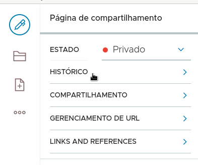

Configurar compartilhamento no portal do volto na cmc
Contents
Configurar compartilhamento no portal do volto na cmc#
Configurar compartilhamento no portal Volto.
Inicio#
Quando o usuário está autenticado e clica no botão de mais opções, um menu é exibido. No menu são apresentadas várias funcionalidades. Alteração de estado, histórico de mudanças, definições de compartilhamento, gerenciamento de url e verificação de links e referências.
Estados#
O usuário que tem permissão de editor ou revisor pode alterar o estado do ítem de conteúdo. Os estados padrão do Plone são o estado Privado, o estado em Revisão e o estado Publicado. Clique no menu de estados.
Opções de estados#
Ao clicar no menu de opções de estado os valores possíveis são apresentados.
Histórico#
É possível ver as mudanças no ítem de conteúdo atraveś da funcionalidade histórico. Clique no menu Histórico para acessar o histórico de mudanças da página.
Mudanças da página#
Na página de histórico de mudanças é possível ver o que foi feito, quem fez e quando.
{kind=link}
Compartilhamento#
É possível configurar o acesso ao ítem de conteúdo através do menu de compartilhamento. Clique no menu Compartilhamento para abrir a página de definição de compartilhamento.
Configuração de compartilhamento#
Por padrão aparece o grupo préexistente do Plone chamado Usuários logados. É possível configurar as permissões para que usuários logados possam editar, ver ou revisar o ítem de conteúdo.
{kind=link}
Pesquisa de usuário#
Para configurar as permissões de compartilhamento para outros usuários basta pesquisar pelo nome.
{kind=link}
Usuários encontrados#
Assim que a pesquisa é realizada os usuários correspondentes a pesquisa são exibidos na lista. Então é possível configurar as permissões de compartilhamento para os usuários encontrados.

{kind=link}
Grupos encontrados#
Assim como os usuários, os grupos correspondentes ao termo de pesquisa são exibidos na lista. Então as configurações de compartilhamento para os grupos podem ser realizadas.
{kind=link}
Configuração de permissões, botão salvar#
Após as escolhas de permissões deve ser feito clique no botão salvar para persistir as mudanças.
{kind=link}
Configuração de permissões, botão cancelar#
Se houver a necessidade é possível cancelar todas as alterações que ainda não foram salvas.
{kind=link}
Botões de ação habilitados, usuário aluno, autor#
De acordo com as permissões, são exibidos os botões de ação. O usuário aluno é um usuário com direitos de editor, revisor e membro. Como ele é o autor do ítem atual possui todas as permissões e todos os botões estão habilitados.
{kind=link}
Botões de ação habilitados, usuário aluno 2, possui permissões#
De forma semelhante ocorre com o aluno 2, ele tem todos os papéis que o aluno e então os botões também estão habilitados.
{kind=link}
Botão mais opções apenas, usuário 3#
No caso do aluno 3 ele não tem as permissões nem os papéis. Apenas o botão de mais opções aparece.
{kind=link}
{kind=link}
Botão de ferramentas pessoais do usuário 3#
Da mesma forma que os usuários que possuem mais permissões o aluno 3 tem acesso a ferramentas pessoais. Clique no botão de ferramentas pessoais do usuário.
{kind=link}
Ferramentas pessoais do usuário 3#
Ao clicar no botão de ferramentas pessoais do usuário 3 percebemos que ele possue as mesmas funcionalidades que os outros usuários. Apenas o usuário administrador do portal possui uma funcionalidade diferente para gerenciar o portal. Entretanto a parte administrativa está fora do escopo desse treinamento.
{kind=link}
Gerenciamento de url#
Outra funcionalidade do Plone é o gerenciamento de endereços (urls). É possível definir nomes alternativos para acessar esse mesmo ítem. Clica no menu de GERENCIAMENTO DE URL para acessar o formulário de configuração.
Caminhos alternativos#
No formulário de gerenciamento de endereços basta adicionar ou remover o caminho alternativo desejado.
{kind=link}
Links e referências#
Outra funcionalidade é o formulário de links e referências. Esta funcionalidade permite saber quais são as ligações que apontam para este ítem de conteúdo. Clique na notícia no menu de navegação superior para ver a notícia.
{kind=link}
Notícia com referência para a página#
Foi criada uma notícia que tem um link para o nosso ítem de conteúdo chamado Página de compartilhamento.

Referências da página#
Para acessar a funcionalidade de referências, clique no menu de Links e Referências do ítem Página de compartilhamento.
Lista de ítens com referência para a página#
Então a lista de ítens que fazem ligação para a página aparecem na lista. Repare que a notícia está na lista de referências.
{kind=link}